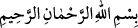
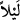

Mİ’RÂC MÛCİZESİ
Rahmân ve Rahîm (olan) Allah’ın adıyla.
1. Bir gece, kendisine âyetlerimizden bir kısmını gösterelim diye (Muhammed)
kulunu Mescid-i Harâm’dan, çevresini mübarek kıldığımız Mescid-i Aksâ’ya
götüren Allah noksan sıfatlardan münezzehtir. O, gerçekten işitendir, görendir.
Âyetteki “
leylen (bir gece)” kelimesi, te’kid ifâde eder. Çünkü isrâ ancak
geceleyin olur. Gündüzleyin ve sadece ruhen olduğu tasavvur edilmesin diye bu te’kid
getirilmiştir. Ya da isrânın gecenin çok az bir kısmında olduğunu ifâde için müfred
sıygasıyla, bütünün bir parçasına delâlet etsin diye nekre olarak gelmiştir. Çünkü “
Sirtü leylen (geceleyin yürüdüm)” şeklindeki sözün, senin gecelerin birinde
yürüdüğün anlamına geldiği gibi bir gecenin çok az bir bölümünde yürüdüğün anlamına
da gelir. Ancak yine “
Sirtü’l-leyle” dediğin zaman yürüyüşünün gecenin
tamamını kapladığını gösterir. Dolayısıyla bu, yürüyüşün zarfı değil ölçüsüdür.
Mi‘rac gecesi 27 Receb, Pazartesi gecesidir. İnsanlar bu görüşe göre amel ederler.
Âlimler derler ki: Rasûlullah (s.a.)’in doğumu, peygamber oluşu, mi‘racı, hicret için
Mekke’den çıkışı, Medine’ye girişi ve irtihâli Pazartesi günüdür. Bunun sırrı şu
olabilir: Pazartesi günü feyyâziyetin kaynağı olan, varlık mertebelerinden ikinci
taayyüne işâret eder. Nitekim hece harflerinden “be” de ikinci taayyüne işâret
etmektedir. Pazartesi günü de böyledir. Dolayısıyla ilk harf olan elif ve Pazar günü[1]
zâtın taayyünü yerindedir. “Be” harfi ve pazartesi günü, yâni onların taayyünleri ilâhî
sıfatların taayyünü yerindedir, anla!
Bu geceyi (mi‘rac) vasfetmek üzere Molla Câmî (k.s.) şöyle der:
O gecenin kadrine kadir gecesi misaldir
O gecenin nûrundan berat gecesi dolunaydır
Baş tarafının siyahlığı hurilere utangaçlık verir
Fecir aydınlığının beyazlığı nur üstüne nurdur
Rüzgarı sümbülün kıvrımını tarayıp açar
Havası şebnemin göz yaşını dâne eyler
Sâbit yıldızların çivisi ile seyyâr olan felekler feleği